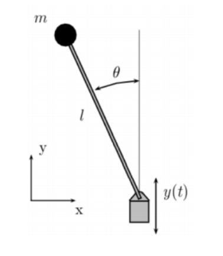

Solución numérica y verificación del modelo del potencial efectivo de Landau & Lifshitz §30
Se estudia el movimiento de un péndulo simple de longitud $l$ y masa $m$ cuyo punto de suspensión oscila verticalmente con amplitud $a$ y frecuencia $\gamma$, siguiendo la ley $y_0(t) = a\cos(\gamma t)$. El problema consiste en determinar numéricamente la dinámica completa del sistema integrando la ecuación de movimiento exacta (no linealizada), y contrastarla con el modelo analítico del potencial efectivo de Kapitza, derivado en Landau & Lifshitz §30. En particular, se busca verificar la condición $a\gamma > \sqrt{2gl}$ bajo la cual la posición invertida $\varphi = \pi$ —normalmente inestable— se convierte en un equilibrio estable, fenómeno conocido como estabilización dinámica de Kapitza.
Un primer borrador de la integración numérica, escrito en Python, puede consultarse en
este cuaderno de Google Colab.
La simulación interactiva presentada en la sección 3 corresponde a una migración de ese
código a JavaScript, con la animación construida sobre la API Canvas del
navegador; tanto la migración como la animación se desarrollaron con apoyo del modelo Claude.
Se considera un péndulo plano de masa $m$ y longitud $l$, articulado en un pivot que se desplaza verticalmente (tomando $y$ positivo hacia abajo) según:
$$y_0(t) = a\cos(\gamma t). \tag{1}$$El ángulo generalizado $\varphi$ se mide desde la vertical hacia abajo, de modo que $\varphi = 0$ corresponde al equilibrio estable habitual y $\varphi = \pi$ a la posición invertida. Las coordenadas cartesianas de la masa respecto a un origen fijo son:
$$x_m = l\sin\varphi, \qquad y_m = a\cos(\gamma t) + l\cos\varphi. \tag{2}$$
Las velocidades de la masa se obtienen derivando (2):
$$\dot{x}_m = l\dot\varphi\cos\varphi, \qquad \dot{y}_m = -a\gamma\sin(\gamma t) + l\dot\varphi\sin\varphi.$$La energía cinética es $T = \tfrac{m}{2}(\dot x_m^2 + \dot y_m^2)$:
$$T = \frac{ml^2}{2}\dot\varphi^2 + \frac{ma^2\gamma^2}{2}\sin^2(\gamma t) + mla\gamma\,\dot\varphi\sin(\gamma t)\sin\varphi. \tag{3}$$Dado que el eje $y$ apunta hacia abajo, la energía potencial gravitacional es $V = -mgy_m$:
$$V = -mg\bigl[a\cos(\gamma t) + l\cos\varphi\bigr]. \tag{4}$$El Lagrangiano $L = T - V$ contiene dos términos que pueden absorberse como derivadas temporales totales o dependen únicamente de $t$, sin afectar las ecuaciones de movimiento:
Término 1: $\tfrac{ma^2\gamma^2}{2}\sin^2(\gamma t)$ es función pura de $t$ → se descarta.
Término 2: el producto cruzado $mla\gamma\,\dot\varphi\sin(\gamma t)\sin\varphi$ se reescribe observando que:
$$\frac{d}{dt}\!\left[-mla\gamma\sin(\gamma t)\cos\varphi\right] = -mla\gamma^2\cos(\gamma t)\cos\varphi \;+\; mla\gamma\sin(\gamma t)\,\dot\varphi\sin\varphi.$$De aquí:
$$mla\gamma\,\dot\varphi\sin(\gamma t)\sin\varphi = \frac{d}{dt}\!\left[-mla\gamma\sin(\gamma t)\cos\varphi\right] + mla\gamma^2\cos(\gamma t)\cos\varphi.$$La derivada total se descarta; queda la contribución $mla\gamma^2\cos(\gamma t)\cos\varphi$.
El Lagrangiano efectivo, equivalente al original para las ecuaciones de movimiento, es:
Aplicando las ecuaciones de Euler-Lagrange $\dfrac{d}{dt}\!\left(\dfrac{\partial L}{\partial\dot\varphi}\right) - \dfrac{\partial L}{\partial\varphi} = 0$ a (5):
$$\frac{\partial L}{\partial\dot\varphi} = ml^2\dot\varphi, \qquad \frac{\partial L}{\partial\varphi} = -\bigl(mgl + mla\gamma^2\cos\gamma t\bigr)\sin\varphi.$$Nótese que (6) es no lineal y no linealizada: contiene $\sin\varphi$ sin aproximación de ángulo pequeño. Para $a = 0$ se recupera el péndulo simple. La forzante $\tfrac{a\gamma^2}{l}\cos(\gamma t)$ actúa como una modulación periódica de la gravedad efectiva, abriendo la posibilidad de inducir nuevas configuraciones de equilibrio.
La ecuación (6) se reescribe como un sistema de dos EDOs de primer orden introduciendo $\omega \equiv \dot\varphi$:
$$\frac{d\varphi}{dt} = \omega, \qquad \frac{d\omega}{dt} = -\left[\frac{g}{l} + \frac{a\gamma^2}{l}\cos(\gamma t)\right]\sin\varphi. \tag{7}$$El vector de estado es $\mathbf{y} = (\varphi,\,\omega)^\top$. El método RK4 avanza un paso $h$ mediante:
$$\mathbf{k}_1 = h\,\mathbf{F}(\mathbf{y}_n,\,t_n), \quad \mathbf{k}_2 = h\,\mathbf{F}\!\left(\mathbf{y}_n + \tfrac{\mathbf{k}_1}{2},\,t_n+\tfrac{h}{2}\right),$$ $$\mathbf{k}_3 = h\,\mathbf{F}\!\left(\mathbf{y}_n + \tfrac{\mathbf{k}_2}{2},\,t_n+\tfrac{h}{2}\right), \quad \mathbf{k}_4 = h\,\mathbf{F}(\mathbf{y}_n + \mathbf{k}_3,\,t_n+h), \tag{8}$$ $$\mathbf{y}_{n+1} = \mathbf{y}_n + \frac{1}{6}\!\left(\mathbf{k}_1 + 2\mathbf{k}_2 + 2\mathbf{k}_3 + \mathbf{k}_4\right).$$El error de truncamiento local es $\mathcal{O}(h^5)$ y el global $\mathcal{O}(h^4)$. En la simulación se utiliza $h = 5\times10^{-4}$ s y 30 pasos por cuadro de animación, garantizando conservación numérica satisfactoria de la energía.
Para frecuencias grandes ($\gamma \gg \omega_0 = \sqrt{g/l}$), Kapitza descompone el ángulo en una parte lenta $\Phi(t)$ y una perturbación rápida $\xi(t)$:
$$\varphi(t) = \Phi(t) + \xi(t), \qquad \langle\xi\rangle = 0. \tag{9}$$Sustituyendo (9) en (6) y usando $\sin(\Phi+\xi)\approx\sin\Phi + \xi\cos\Phi$, la componente dominante de $\ddot\xi$ es:
$$\ddot\xi \;\approx\; -\frac{a\gamma^2}{l}\cos(\gamma t)\sin\Phi. \tag{10}$$Integrando (10) con $\Phi$ aproximadamente constante:
$$\xi(t) \;\approx\; \frac{a}{l}\cos(\gamma t)\sin\Phi. \tag{11}$$La ecuación efectiva para la parte lenta $\Phi$ da lugar al potencial efectivo de Kapitza:
El equilibrio $\varphi = \pi$ es estable si $U_\text{ef}''(\pi) > 0$. Evaluando la segunda derivada de (14) en $\varphi = \pi$:
$$\frac{d^2 U_\text{ef}}{d\varphi^2}\Bigg|_{\varphi=\pi} = mgl\!\left(-1 + \frac{a^2\gamma^2}{2gl}\right). \tag{15}$$Por debajo de este umbral $\varphi = \pi$ es un máximo de $U_\text{ef}$ y el péndulo cae. Por encima, emerge un pozo de potencial que confina al péndulo cerca de $\varphi = \pi$.
| Parámetro | Símbolo | Rango | Rol físico |
|---|---|---|---|
| $a$ | Amplitud del soporte | $0.01$–$0.50$ m | Controla la intensidad de la forzante; $a$ grande favorece la estabilización |
| $\gamma$ | Frecuencia de la forzante | $1$–$80$ rad/s | Debe ser $\gamma\gg\omega_0$ para validez de §30 |
| $l$ | Longitud del péndulo | $0.10$–$1.00$ m | Determina $\omega_0 = \sqrt{g/l}$ y el umbral $\sqrt{2gl}$ |
| $\varphi_0$ | Ángulo inicial | $-\pi$–$\pi$ rad | $\varphi_0=\pi$ inicia en la posición invertida |
| $g$ | Aceleración gravitacional | $9.81$ m/s² (fijo) | Define la escala de tiempo natural junto con $l$ |
| $h$ | Paso de integración | $5\times10^{-4}$ s (fijo) | Precisión $\mathcal{O}(h^4)$ para resolver la escala rápida $1/\gamma$ |
La simulación a continuación integra numéricamente la ecuación (6) mediante el método RK4 descrito en la sección 2.4. Los controles permiten variar los parámetros $a$, $\gamma$, $l$ y $\varphi_0$ en tiempo real, y verificar el indicador de la condición de Kapitza (16). El diagrama del potencial efectivo $U_\text{ef}(\varphi)$ (ec. 14) y el espacio de fase $(\varphi,\,\dot\varphi)$ se actualizan de forma sincronizada.
Landau & Lifshitz §5 · §27 · §30 · Mecánica Teórica II · Universidad de Antioquia
// Haz clic en "Ver código fuente" para cargar...